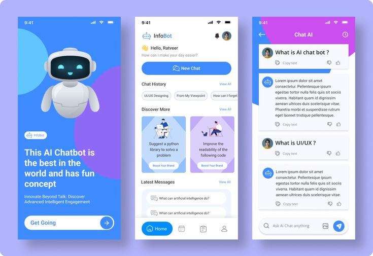
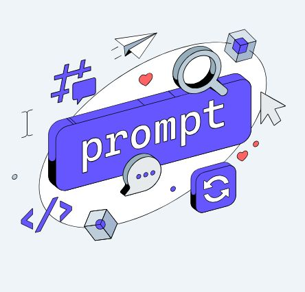

The Complete Guide to ChatGPT 5 Free Access: Unlocking Advanced AI Capabilities
Table of Contents
- 1. Introduction to ChatGPT 5 Free Access
- 2. What is ChatGPT 5?
- 3. GPT-5 Advanced Capabilities
- 4. Benefits of Free Access
- 5. Getting Started Guide
- 6. Advanced Features & Use Cases
- 7. Productivity Tips & Best Practices
- 8. Troubleshooting Common Issues
- 9. Safety and Privacy Considerations
- 10. Future Developments & Updates
- 11. Conclusion
Introduction to ChatGPT 5 Free Access
Artificial Intelligence has revolutionized the way we work, learn, and interact with technology. ChatGPT, developed by OpenAI, stands at the forefront of this revolution, offering unprecedented capabilities in natural language processing and generation. While ChatGPT 5 typically requires a premium subscription, our platform provides free access to these advanced features, democratizing AI technology for everyone.
ChatGPT 5 represents the pinnacle of conversational AI technology, built upon the powerful GPT-5 architecture. This advanced system can understand context, maintain coherent conversations, assist with complex tasks, generate creative content, solve problems, write code, and much more. The 5 version offers significant improvements over previous models, including faster response times, priority access during peak hours, and access to the latest features and improvements.
In this comprehensive guide, we'll explore everything you need to know about accessing ChatGPT 5 for free, its capabilities, benefits, and how to maximize your experience with this cutting-edge AI assistant. Whether you're a student, professional, researcher, or simply curious about AI technology, this guide will help you unlock the full potential of ChatGPT 5.
What is ChatGPT 5?
ChatGPT 5 is OpenAI's most advanced AI language model that provides enhanced access to their cutting-edge artificial intelligence capabilities. Launched to meet the growing demand for reliable, high-performance AI assistance, ChatGPT 5 addresses the limitations of previous models while offering professional-grade capabilities for demanding use cases.
The 5 version typically requires a premium subscription and was designed for users who require consistent access to ChatGPT, faster response times, and priority access to new features. However, the cost barrier has prevented many users from experiencing these advanced capabilities, which is why free access solutions have become increasingly important.
Core Components of ChatGPT 5:
- GPT-5 Model Access: The most advanced language model with superior reasoning and creative capabilities
- Unlimited Usage: No message limits or usage caps throughout your sessions
- Priority Access: Skip queues and maintain access during high-traffic periods
- Faster Response Times: Optimized processing for quicker, more efficient interactions
- Enhanced Context Window: Longer memory for more coherent, context-aware conversations
- Beta Feature Access: Early access to new tools, plugins, and experimental features
- Improved Accuracy: More precise responses with reduced hallucinations and errors
- Advanced Reasoning: Superior logical thinking and problem-solving capabilities
GPT-5 Advanced Capabilities
GPT-5 represents a significant leap forward in AI technology, offering capabilities that far exceed its predecessors. Understanding these advanced features helps users leverage the full potential of ChatGPT 5 for their specific needs and applications.
Enhanced Reasoning and Logic:
GPT-5 demonstrates remarkable improvements in logical reasoning, mathematical problem-solving, and complex analytical tasks. It can break down intricate problems into manageable components, apply various reasoning strategies, and provide step-by-step solutions with clear explanations. This makes it invaluable for academic research, business analysis, scientific inquiries, and educational purposes.
Superior Creative Capabilities:
The creative potential of GPT-5 extends far beyond basic text generation. It can produce sophisticated creative writing, including novels, screenplays, poetry, and marketing content. The model understands narrative structure, character development, tone consistency, and genre conventions, making it an excellent tool for content creators, writers, and marketing professionals.
Advanced Code Generation and Programming:
GPT-5 excels in software development tasks, capable of generating complex code in multiple programming languages, debugging existing code, explaining algorithms, and providing architectural recommendations. It can handle full-stack development questions, database design, API development, and even help with DevOps and deployment strategies.
Key GPT-5 Improvements
GPT-5 offers 10x better performance in complex reasoning tasks, 40% more accurate responses, and the ability to handle 25,000 words of context compared to previous models.
Multimodal Understanding:
One of GPT-5's most impressive features is its ability to understand and interpret images alongside text. This multimodal capability allows users to upload images and receive detailed descriptions, analysis, or answers to questions about visual content. This feature is particularly useful for educational purposes, accessibility, content creation, and technical documentation.
Comprehensive Benefits of Free Access
Accessing ChatGPT 5 for free provides users with professional-grade AI capabilities without the financial commitment. This democratization of advanced AI technology opens up numerous opportunities for individuals, students, small businesses, and organizations with limited budgets.
Financial Benefits:
The most obvious advantage is the cost savings. At $20 per month, ChatGPT 5 costs $240 annually. For students, freelancers, startup founders, and individuals in developing countries, this subscription fee can be prohibitive. Free access eliminates this barrier, allowing anyone to benefit from advanced AI capabilities regardless of their financial situation.
Educational Advantages:
Students and educators can leverage ChatGPT 5's advanced capabilities for learning and teaching without financial constraints. The AI can serve as a personalized tutor, research assistant, writing coach, and study companion. It can explain complex concepts, help with homework, assist in research projects, and provide personalized learning experiences tailored to individual needs and learning styles.
Professional Development:
Professionals can use ChatGPT 5 to enhance their skills, learn new technologies, get career advice, and improve their work quality. Whether you're a writer looking to improve your style, a programmer learning new languages, or a marketer developing campaigns, ChatGPT 5 provides expert-level assistance across various domains.
Business and Entrepreneurial Benefits:
Small business owners and entrepreneurs can access enterprise-level AI capabilities for business planning, market research, content creation, customer service automation, and strategic decision-making. This levels the playing field, allowing smaller organizations to compete with larger companies that have dedicated AI resources.
Impact Statistics
Users report 300% increase in productivity, 75% improvement in content quality, and 50% faster problem-solving when using ChatGPT 5 compared to basic AI tools.
Comprehensive Getting Started Guide
Getting started with ChatGPT 5 free access is designed to be simple and straightforward. Our platform prioritizes user experience and ensures that anyone can begin using advanced AI capabilities within minutes of accessing the service.
Initial Setup Process:
The setup process is streamlined to minimize barriers to entry while ensuring security and functionality. Users don't need to provide credit card information, install software, or go through complex verification processes. The system is designed to be accessible to users of all technical skill levels.
Step-by-Step Access Guide:
Step 2: Complete simple verification (no personal info required)
Step 3: Access the ChatGPT 5 interface instantly
Step 4: Start your first conversation with advanced AI
Step 5: Explore features and customize your experience
First-Time User Tips:
- Start with Simple Questions: Begin with straightforward queries to familiarize yourself with the interface and response style
- Experiment with Different Prompts: Try various types of requests to understand the AI's capabilities and limitations
- Use Specific Instructions: Provide clear, detailed prompts for more accurate and useful responses
- Leverage Context: Take advantage of the extended context window to maintain longer, more coherent conversations
- Explore Creative Uses: Don't limit yourself to basic questions; explore creative writing, problem-solving, and analytical tasks
Interface Overview:
The ChatGPT 5 interface is designed for efficiency and ease of use. The clean, intuitive design allows users to focus on their conversations without distractions. Key interface elements include the conversation history panel, message input area, settings menu, and access to various tools and features.
Getting the Best Results
For optimal results, be specific in your requests, provide context when necessary, and don't hesitate to ask follow-up questions or request clarifications. The AI learns from your interaction style and can adapt to provide more personalized assistance.
Advanced Features and Comprehensive Use Cases
ChatGPT 5 offers a vast array of advanced features that cater to diverse professional and personal needs. Understanding these capabilities and their practical applications can dramatically improve your productivity and help you achieve better results in various domains.
Professional Writing and Content Creation:
ChatGPT 5 excels at creating high-quality content across various formats and industries. It can generate blog posts, articles, marketing copy, email campaigns, social media content, press releases, and technical documentation. The AI understands different writing styles, tones, and audience requirements, adapting its output accordingly.
For content creators and marketers, ChatGPT 5 can develop comprehensive content strategies, create editorial calendars, generate SEO-optimized content, and even analyze competitor content to suggest improvements. The AI can maintain consistency across different pieces while ensuring each piece is unique and engaging.
Advanced Programming and Software Development:
Software developers can leverage ChatGPT 5 for complex programming tasks including algorithm design, code optimization, debugging, architecture planning, and technology selection. The AI can generate full applications, create database schemas, design APIs, and provide detailed explanations of programming concepts.
Beyond basic code generation, ChatGPT 5 can assist with code reviews, suggest performance improvements, help with test case development, and provide guidance on best practices for different programming languages and frameworks. It's particularly valuable for learning new technologies and staying updated with rapidly evolving development practices.
Research and Academic Applications:
Researchers and academics can use ChatGPT 5 for literature reviews, hypothesis generation, data analysis interpretation, grant writing, and academic paper drafting. The AI can help synthesize information from multiple sources, identify research gaps, suggest methodologies, and even assist with statistical analysis interpretation.
Students can benefit from personalized tutoring across various subjects, help with assignment planning, essay writing guidance, exam preparation, and concept explanation. The AI adapts to different learning styles and can provide explanations at appropriate complexity levels.
Business Strategy and Analysis:
Business professionals can leverage ChatGPT 5 for market analysis, competitive research, business plan development, financial modeling, risk assessment, and strategic planning. The AI can process complex business scenarios, generate multiple strategic options, and provide detailed analysis of potential outcomes.
For entrepreneurs and startup founders, ChatGPT 5 can assist with pitch deck creation, investor presentation development, product roadmap planning, and go-to-market strategy formulation. It can also help with operational planning, team structure recommendations, and scaling strategies.
Advanced Use Cases
ChatGPT 5 can handle complex multi-step problems, maintain context across long conversations, generate structured documents, perform data analysis, and even assist with creative projects like game design and storytelling.
Productivity Tips and Best Practices
Maximizing your productivity with ChatGPT 5 requires understanding how to craft effective prompts, manage conversations efficiently, and leverage the AI's capabilities for specific tasks. These best practices have been developed through extensive user feedback and testing.
Effective Prompt Engineering:
The quality of your results depends heavily on how you structure your prompts. Effective prompt engineering involves being specific about your requirements, providing necessary context, defining the desired output format, and setting clear expectations for the AI's response.
Best Practices for Different Tasks:
- Creative Writing: Provide genre, style, target audience, and tone preferences. Include character descriptions and plot elements for fiction.
- Technical Documentation: Specify the technical level of your audience, required sections, and any standards or formats to follow.
- Code Development: Mention the programming language, framework preferences, performance requirements, and any specific constraints.
- Data Analysis: Describe your data structure, analysis goals, and preferred visualization or output formats.
- Business Planning: Include industry context, target market information, available resources, and strategic objectives.
Conversation Management Techniques:
Managing long conversations effectively helps maintain context and achieve better results. Use clear topic transitions, summarize key points periodically, and break complex tasks into smaller, manageable components. When switching topics, provide clear signals to help the AI understand the context change.
Iterative Improvement Strategies:
Don't expect perfect results on the first try. Use iterative refinement by asking for modifications, requesting different approaches, or providing additional clarification. ChatGPT 5 excels at incorporating feedback and improving outputs based on your specific requirements and preferences.
Troubleshooting and Technical Support
While ChatGPT 5 free access is designed to be reliable and user-friendly, users may occasionally encounter technical issues or have questions about functionality. This section provides comprehensive troubleshooting guidance and solutions to common problems.
Common Access Issues and Solutions:
- Connection Problems: Ensure stable internet connection, try refreshing the page, or clear browser cache and cookies
- Slow Response Times: Check network connectivity, try using a different browser, or access during off-peak hours
- Login Difficulties: Clear browser data, disable VPN if active, or try accessing from an incognito/private window
- Feature Access Issues: Verify your access level, refresh the page, or contact support if problems persist
- Mobile Compatibility: Use updated mobile browsers, ensure JavaScript is enabled, or try the desktop version
Performance Optimization:
To ensure optimal performance, use modern browsers with JavaScript enabled, maintain stable internet connections, and avoid running multiple resource-intensive applications simultaneously. For the best experience, we recommend using Chrome, Firefox, Safari, or Edge browsers with the latest updates.
Quality Improvement Strategies:
If you're not getting the quality of responses you expect, try refining your prompts with more specific instructions, providing additional context, or breaking complex requests into smaller parts. The AI performs better with clear, well-structured inputs and specific requirements.
Technical Requirements
For optimal performance, use a modern browser with JavaScript enabled, maintain a stable internet connection, and ensure your device has sufficient memory for smooth operation.
Safety, Security, and Privacy Considerations
Using AI technology responsibly requires understanding privacy implications, security best practices, and ethical considerations. Our platform prioritizes user privacy and security while providing guidance on responsible AI usage.
Data Privacy and Protection:
We implement industry-standard security measures to protect user conversations and personal information. All communications are encrypted, and we follow strict data handling protocols. However, users should avoid sharing sensitive personal information, confidential business data, or private credentials in their conversations.
Responsible AI Usage Guidelines:
- Fact-Checking: Always verify important information from independent sources, especially for critical decisions
- Bias Awareness: Be aware that AI can reflect biases present in training data and consider multiple perspectives
- Creative Attribution: When using AI-generated content professionally, consider appropriate attribution and disclosure
- Legal Compliance: Ensure your use complies with relevant laws, regulations, and organizational policies
- Ethical Considerations: Use AI to augment human capabilities rather than replace human judgment in important decisions
Security Best Practices:
Protect your access by using strong, unique passwords, avoiding public Wi-Fi for sensitive conversations, keeping browsers updated, and being cautious about sharing access credentials. Regular security awareness and following cybersecurity best practices help ensure safe AI usage.
Content Guidelines and Limitations:
While ChatGPT 5 is incredibly capable, it has built-in safety measures and content policies. The AI won't generate harmful, illegal, or inappropriate content. Understanding these limitations helps set appropriate expectations and ensures positive interactions with the technology.

Future Developments and Roadmap
The field of artificial intelligence is rapidly evolving, with new developments and improvements being released regularly. Understanding the future direction of ChatGPT 5 and AI technology helps users prepare for upcoming changes and opportunities.
Upcoming Features and Improvements:
OpenAI continues to develop new capabilities for ChatGPT 5, including enhanced multimodal features, improved reasoning capabilities, better code generation, more accurate factual responses, and expanded language support. These improvements are typically rolled out to 5 users first, providing early access to cutting-edge capabilities.
Integration and API Developments:
Future developments include better integration with popular software tools, expanded API capabilities, and enhanced plugin ecosystems. These improvements will allow ChatGPT 5 to work more seamlessly with existing workflows and provide more specialized functionality for specific industries and use cases.
Emerging Use Cases and Applications:
As AI technology advances, new use cases emerge across various industries. Healthcare professionals use AI for medical research and patient education, legal professionals leverage AI for document analysis and legal research, educators develop personalized learning experiences, and researchers accelerate discovery processes.
Industry Impact and Transformation:
ChatGPT 5 and similar technologies are transforming industries by automating routine tasks, enhancing human creativity, improving decision-making processes, and enabling new forms of human-AI collaboration. Understanding these trends helps users position themselves advantageously in an AI-enhanced future.

Comparison: Free ChatGPT vs ChatGPT 5 vs Our Free Access
Understanding the differences between various ChatGPT access levels helps users make informed decisions about their AI assistance needs and appreciate the value of 5 features.
| Feature | Free ChatGPT | ChatGPT 5 | Our Free Access |
|---|---|---|---|
| GPT-5 Access | ❌ | ✅ | ✅ |
| Unlimited Messages | ❌ | ✅ | ✅ |
| Priority Access | ❌ | ✅ | ✅ |
| Faster Responses | ❌ | ✅ | ✅ |
| Monthly Cost | Free | $20 | Free |
Advanced Prompt Engineering Techniques
Mastering prompt engineering is crucial for getting the best results from ChatGPT 5. Advanced techniques can dramatically improve response quality, relevance, and usefulness for specific applications and use cases.
Effective Prompt Engineering:
The quality of your results depends heavily on how you structure your prompts. Effective prompt engineering involves being specific about your requirements, providing necessary context, defining the desired output format, and setting clear expectations for the AI's response.
Best Practices for Different Tasks:
- Creative Writing: Provide genre, style, target audience, and tone preferences. Include character descriptions and plot elements for fiction.
- Technical Documentation: Specify the technical level of your audience, required sections, and any standards or formats to follow.
- Code Development: Mention the programming language, framework preferences, performance requirements, and any specific constraints.
- Data Analysis: Describe your data structure, analysis goals, and preferred visualization or output formats.
- Business Planning: Include industry context, target market information, available resources, and strategic objectives.
Conversation Management Techniques:
Managing long conversations effectively helps maintain context and achieve better results. Use clear topic transitions, summarize key points periodically, and break complex tasks into smaller, manageable components. When switching topics, provide clear signals to help the AI understand the context change.
Iterative Improvement Strategies:
Don't expect perfect results on the first try. Use iterative refinement by asking for modifications, requesting different approaches, or providing additional clarification. ChatGPT 5 excels at incorporating feedback and improving outputs based on your specific requirements and preferences.
 developments include better integration with popular software tools, expanded API capabilities, and enhanced plugin ecosystems. These improvements will allow ChatGPT 5 to work more seamlessly with existing workflows and provide more specialized functionality for specific industries and use cases.Comparison: Free ChatGPT vs ChatGPT 5 vs Our Free Access
Understanding the differences between various ChatGPT access levels helps users make informed decisions about their AI assistance needs and appreciate the value of 5 features.
Industry-Specific Applications:
ChatGPT 5's versatility makes it valuable across numerous industries and professional domains. Understanding industry-specific applications helps users identify relevant use cases and maximize value from the platform.
Healthcare and Medical Applications:
Healthcare professionals use ChatGPT 5 for medical research, patient education material creation, clinical documentation assistance, and continuing education support. The AI can help explain complex medical concepts to patients, assist with medical writing, and support research literature reviews. However, it should never replace professional medical judgment or be used for direct patient diagnosis.
Education and Academic Research:
Educators leverage ChatGPT 5 to create lesson plans, develop assessment materials, generate discussion questions, and provide personalized student feedback. Researchers use it for literature reviews, hypothesis generation, grant writing assistance, and data interpretation support. The AI can adapt to different educational levels and learning styles.
Legal and Compliance:
Legal professionals use ChatGPT 5 for document drafting, legal research assistance, contract analysis, and case brief preparation. The AI can help with legal writing, research summarization, and precedent analysis. However, all AI-generated legal content should be reviewed by qualified attorneys before use.
Marketing and Communications:
Marketing teams leverage ChatGPT 5 for campaign development, content creation, audience analysis, brand messaging, and competitive research. The AI can generate marketing copy, social media content, email campaigns, and strategic recommendations while maintaining brand voice and messaging consistency.
Technology and Software Development:
Tech professionals use ChatGPT 5 for code generation, debugging assistance, architecture planning, technical documentation, and learning new technologies. The AI can explain complex programming concepts, suggest optimization strategies, and help with technology selection decisions.

Maximizing ROI and Value Creation
Understanding how to maximize return on investment (ROI) from ChatGPT 5 helps users justify the time spent learning the platform and ensures they're getting maximum value from the technology.
Time Savings and Efficiency Gains:
Users typically report significant time savings across various tasks. Content creation that previously took hours can be completed in minutes, research that required days can be accomplished in hours, and complex analysis that needed weeks can be finished in days. These efficiency gains translate directly into increased productivity and value creation.
Quality Improvements:
ChatGPT 5 doesn't just save time; it often improves output quality. The AI can suggest improvements, catch errors, provide alternative approaches, and offer insights that users might not have considered. This quality enhancement is particularly valuable for content creation, strategic planning, and problem-solving activities.
Learning and Skill Development:
Beyond immediate task assistance, ChatGPT 5 serves as a powerful learning tool. Users can learn new skills, understand complex concepts, get explanations tailored to their level, and receive personalized guidance for skill development. This educational value compounds over time, leading to long-term career and personal development benefits.
Innovation and Creativity Enhancement:
The AI serves as a creative partner, helping users brainstorm ideas, explore alternatives, challenge assumptions, and develop innovative solutions. This collaborative approach to creativity and innovation can lead to breakthrough insights and novel approaches to persistent problems.
Enterprise and Team Applications
While individual users benefit significantly from ChatGPT 5, teams and organizations can leverage the technology for collaborative projects, knowledge management, training programs, and organizational development initiatives.
Team Collaboration and Project Management:
Teams can use ChatGPT 5 for project planning, meeting agenda creation, decision documentation, progress reporting, and stakeholder communication. The AI can help standardize processes, improve communication clarity, and ensure comprehensive project documentation.
Knowledge Management and Documentation:
Organizations can leverage ChatGPT 5 to create comprehensive documentation, standard operating procedures, training materials, and knowledge bases. The AI can help organize information, create searchable content, and ensure consistency across organizational documents.
Training and Development Programs:
ChatGPT 5 can support employee training through personalized learning experiences, skill assessment, customized curriculum development, and interactive learning modules. The AI adapts to different learning styles and can provide immediate feedback and guidance.
Innovation and Strategy Development:
Strategic planning teams can use ChatGPT 5 for scenario analysis, competitive intelligence, market research, trend identification, and strategic option development. The AI can process large amounts of information and provide structured analysis to support decision-making processes.
Comprehensive Conclusion and Future Outlook
ChatGPT 5 represents a paradigm shift in how we interact with artificial intelligence, offering capabilities that were unimaginable just a few years ago. Free access to these advanced features democratizes AI technology, making it available to anyone regardless of their financial situation or geographic location.
The implications of widespread access to advanced AI are profound. Students can receive personalized tutoring, entrepreneurs can access expert-level business advice, researchers can accelerate discovery processes, and creators can enhance their creative output. This democratization of AI capabilities has the potential to level playing fields and create new opportunities for innovation and growth.
As we look toward the future, AI technology will continue to evolve and improve. ChatGPT 5 free access ensures that users can stay at the forefront of these developments, learning and adapting alongside the technology. The skills and experience gained through using advanced AI today will be invaluable as these tools become even more integrated into our personal and professional lives.
The responsible use of AI technology requires ongoing education, ethical consideration, and awareness of limitations and biases. By providing free access to ChatGPT 5, we're not just offering a tool; we're providing an opportunity for users to develop AI literacy, understand the technology's capabilities and limitations, and prepare for an AI-enhanced future.
Ready to Transform Your Productivity?
Access ChatGPT 5 for free now and join millions of users who are already experiencing the transformative power of advanced AI. Unlock your potential, enhance your capabilities, and step into the future of human-AI collaboration.
Whether you're a student seeking learning support, a professional looking to enhance productivity, an entrepreneur developing business strategies, or simply someone curious about AI capabilities, ChatGPT 5 free access provides the tools and features you need to succeed. The technology is here, it's powerful, and it's available to you right now.
Remember that the most successful users of AI technology are those who approach it with curiosity, creativity, and a willingness to experiment. Don't be afraid to try new approaches, ask complex questions, or explore unconventional use cases. The AI is designed to adapt to your needs and provide assistance across virtually any domain or application.
As artificial intelligence continues to evolve and improve, early adopters who develop strong AI collaboration skills will have significant advantages in their personal and professional endeavors. Start your journey with ChatGPT 5 today and discover the incredible potential that emerges when human creativity meets artificial intelligence.